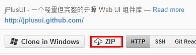
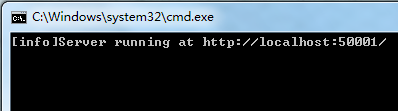
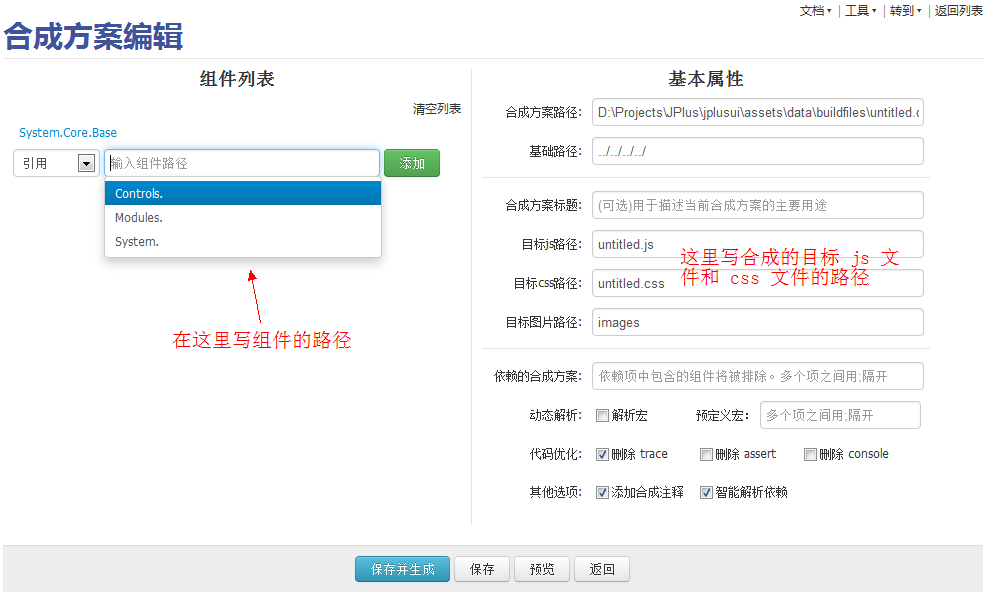
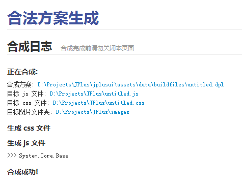

如何定制组件
第一步：下载项目
下载地址: https://github.com/jplusui/jplusui/

第二步：启动服务器
库里的所有开发工具都是使用 Node.js 开发的。所以需要执行跟目录的 startserver.bat 启动服务器（linux 下为 startserver.sh）。
控制台中显示如下文字说明服务器启动成功。关闭控制台可关闭服务器。[端口冲突?]

第三步：定制组件
在浏览器中输入 http://localhost:50001/src，即可见到组件列表。
在组件列表页点右上角的 工具/组件合成工具 即可进入合成工具界面。
点击右上角的 新建合成方案。

其中，组件路径即"组件大分类.组件分类.组件名"。
第四步：使用组件

写完后点击保存并生成，即可得到一个 js 和 css文件。这2个文件包含了之前填写的组件及其依赖的组件。在项目中引用这 2 个文件即可使用组件了。
返回组件列表